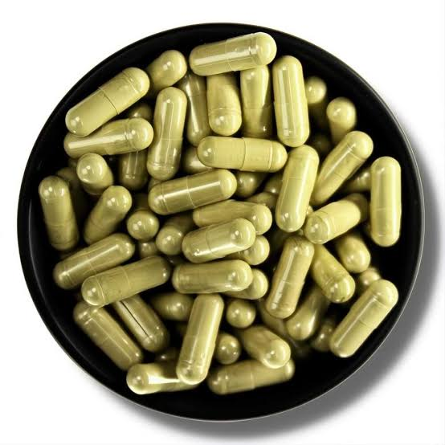
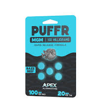
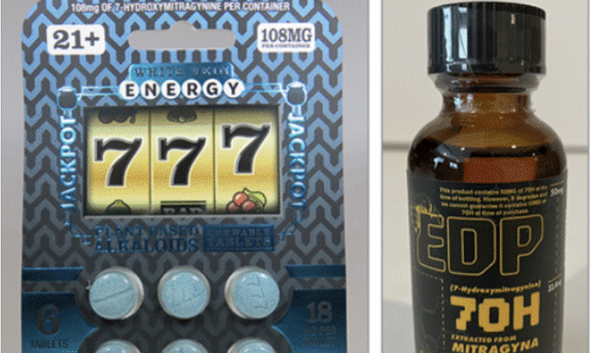
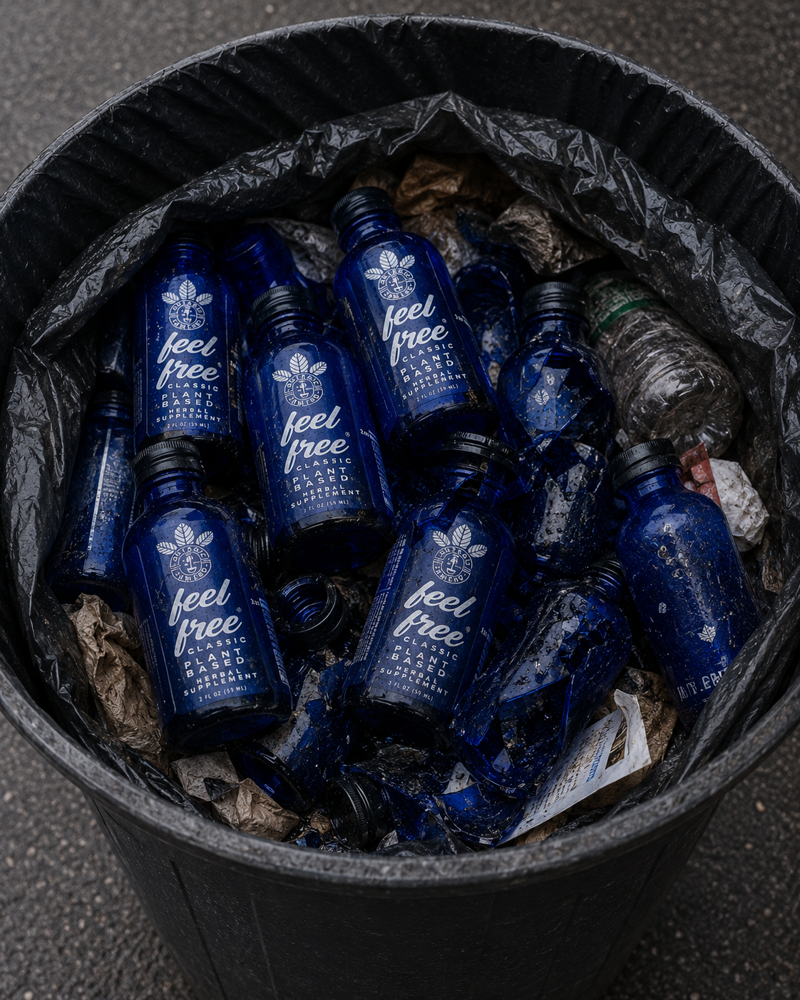
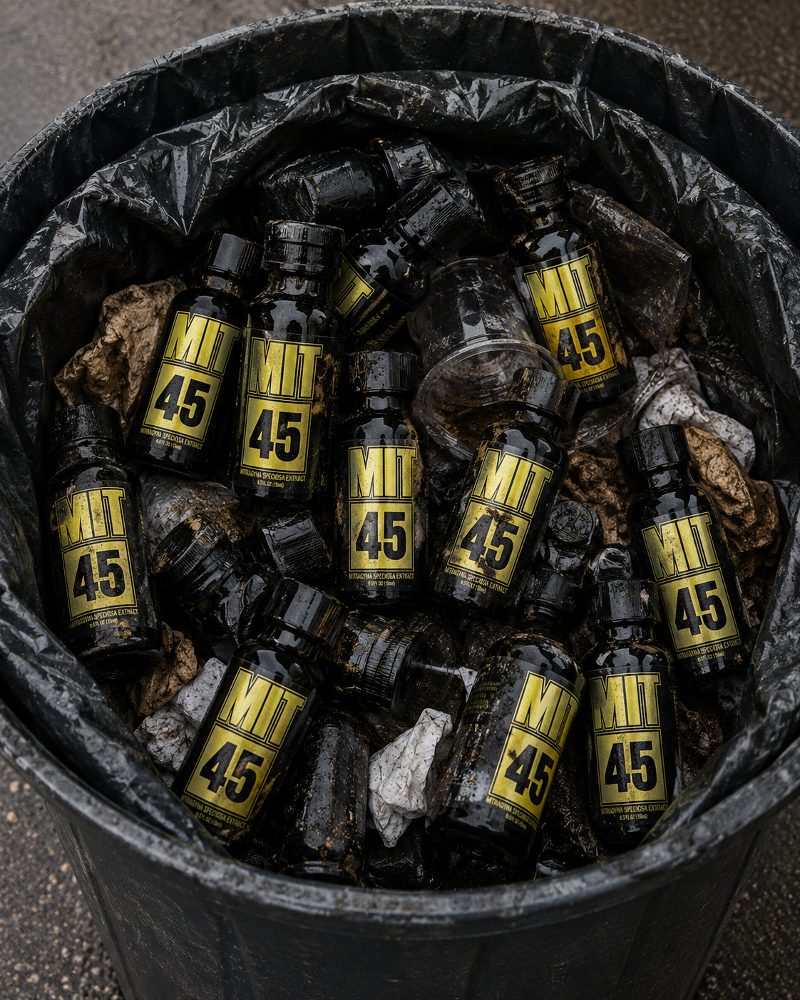

Kratom leaf naturally contains the same alkaloids as extracts, shots, and 7-OH products. There is no “safe” version. All forms are unregulated opioid-active products: one plant, one danger.
Some lawmakers have been told that “natural” kratom leaf is safer than extracts or “synthetic” 7-OH products. That is false. The kratom plant naturally contains two primary psychoactive alkaloids: mitragynine and 7-hydroxymitragynine (7-OH). These are the same compounds manufacturers concentrate to make extracts and shots. There is no chemical difference between the mitragynine in dried leaf and the mitragynine in a vape shop extract: only the concentration.
When industry lobbyists say “we only oppose synthetic 7-OH,” they are using a distraction. Natural leaf already contains 7-OH, and the body makes more from mitragynine. A “natural-only” bill would leave the same dangerous products on gas station shelves, just without the word “synthetic” on the label.

Contains natural mitragynine and 7-OH. The original plant material. Already opioid-active.

Concentrated mitragynine from the same plant. Higher potency, same pharmacology.

Highly concentrated 7-hydroxymitragynine, already present in natural leaf. A more potent version of the same drug.
Whether it is a capsule of ground leaf, a tincture, or a 7-OH tablet, the active ingredients come from the same source. The major differences are potency and speed of absorption. Regulating one form while allowing another makes no public health sense.
These products are sold in gas stations, vape shops, and online. They are marketed as “herbal supplements,” “wellness shots,” or “relaxation aids.” Their labels often list kratom, mitragynine, or kratom leaf extract. Independent lab tests have found lead, high ethanol levels, and inconsistent alkaloid content.

Liquid kratom extract shot
Concentrated liquid extractThese products are often sold next to energy drinks and candy. They are not regulated by the FDA, and their labels do not warn about dependence, withdrawal, or contamination. A “natural” leaf powder from the same shelf is not a different category. It is a less concentrated form of the same opioid-active product.
Some state bills attempt to ban only “synthetic” kratom alkaloids while leaving “natural” leaf legal. This creates a deliberate loophole:
The only honest policy is a full ban on all kratom products: natural leaf, extracts, shots, and synthetic derivatives. Any bill that leaves “natural” kratom legal is a gift to the industry, not protection for the public.
If you are a legislator, regulator, or concerned citizen, use this page to understand the simple truth: kratom is kratom. There is no safe version. Extracts and 7-OH products are concentrated forms of the same plant-based opioid-active product.